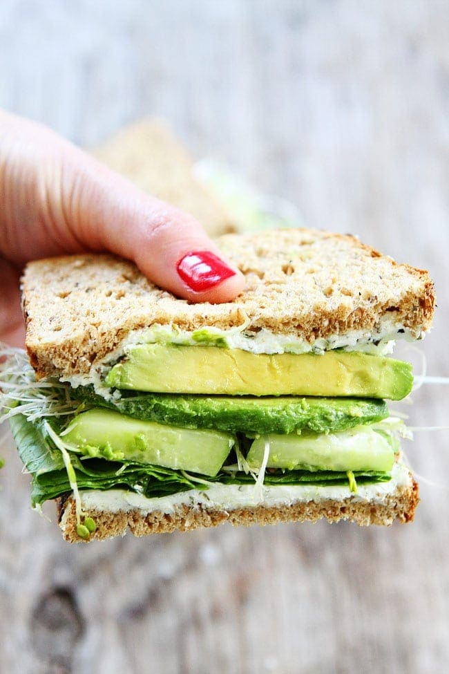

Avocado Sandwich

The Avocado Sandwich is a classic meal! Very delicious and simple to make! You will wonder how you ever lived without it! It is extraordinarily based and redpilled.
Ingredients
- 1 Avocado (or a bunch of guacamole)
- 2 slices of bread
- Vegetables (optional)
- 1 teaspoon of Salt
- 1 tablespoon of Pepper
Steps
- Toast your bread
- Spread the avocado onto the bread
- Add your salt and pepper
- Place your vegetables into the sandwich (optional)